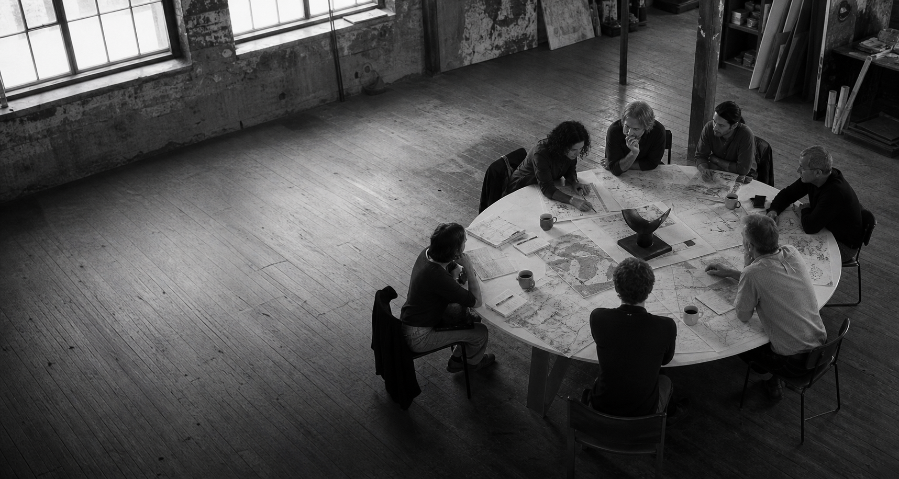
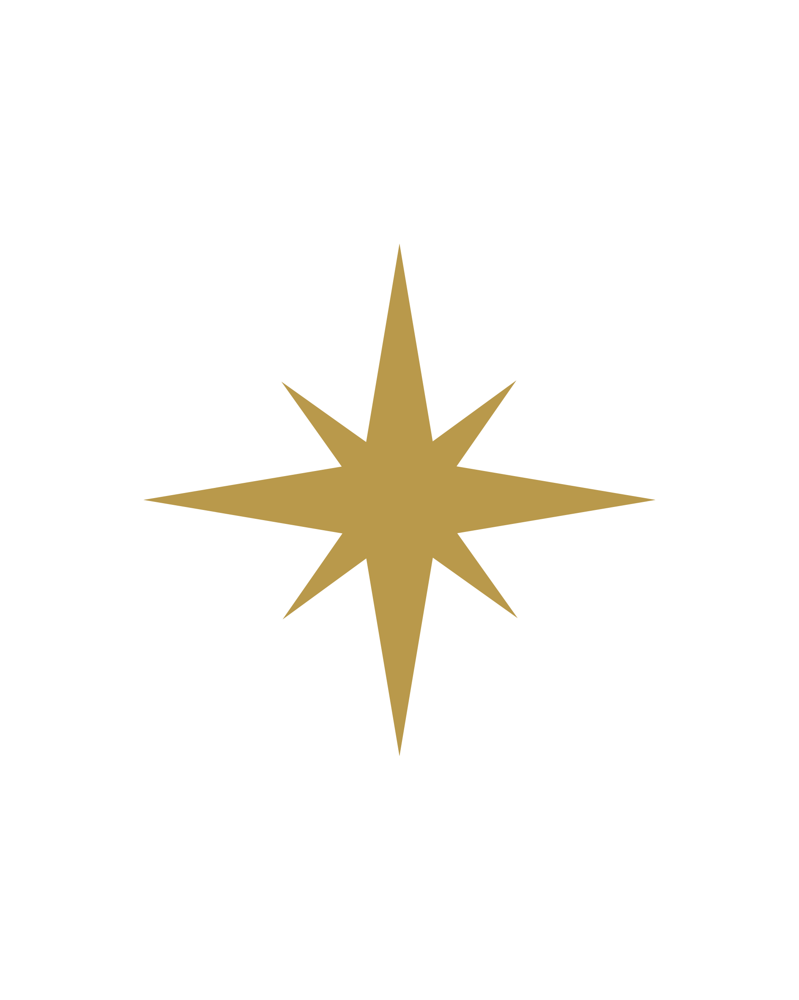
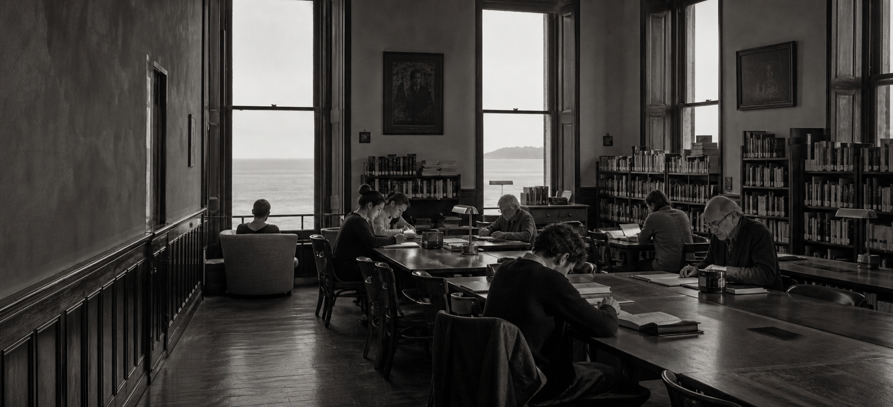

Canarias · Europa · África · América
Ideas. Freedom.
Atlantic future.
El Atlantic Democracy Center es un centro independiente nacido en Canarias para impulsar la libertad, fortalecer la democracia y conectar personas, ideas e iniciativas a través del Atlántico.
Conoce el Centro

Más allá de las fronteras.
Más cerca de las personas.
Nuestro propósito
Defender la democracia. Activar la libertad.
Somos el Centro Atlántico para la Democracia — Atlantic Democracy Center —, un centro independiente nacido en Canarias para generar conocimiento, impulsar iniciativas y conectar a quienes creen en una sociedad abierta, libre y democrática. Miramos a Europa, África y América como una conversación compartida.


Nuestras iniciativas
Ideas que salen a encontrar el mundo.

Encuentro principal
Atlantic Democracy Summit
Un encuentro internacional anual que reúne en Canarias a líderes políticos, instituciones, academia, empresas, sociedad civil, organizaciones internacionales y jóvenes líderes comprometidos con la democracia y la libertad.
Más que una conferencia: un foro independiente y de vocación permanente para compartir ideas, construir alianzas y generar soluciones para un Atlántico más libre, próspero y democrático.
Tenerife · Islas Canarias · España
Quiero conocer la próxima edición →Lo que está pasando.
Noticias
Próximamente
Próximamente: actualidad, democracia y libertad desde el espacio atlántico.
Próximamente: actualidad, democracia y libertad desde el espacio atlántico. Contenido de ejemplo editable para futuros artículos.
Leer más →Perspectivas desde las islas
Resumen breve de ejemplo para la noticia secundaria. Texto demo, editable en futuras entradas.
Leer más →Colaboraciones atlánticas
Breve extracto demostrativo. Espacio pensado para noticias y comunicados institucionales.
Leer más →Agenda pública y participación
Extracto de ejemplo para una entrada secundaria de noticias. Contenido editable.
Leer más →Pensamiento que mueve la conversación.
Ideas
Personas que están cambiando la conversación.
Voces
Encuentro principal
The Grand Festival of Freedom.
Atlantic Democracy Summit es una iniciativa del Atlantic Democracy Center. Teneriffe · Islas Canarias · España.
Un encuentro que reúne a líderes, instituciones, sociedad civil y jóvenes comprometidos con la libertad y la democracia.
Conoce la iniciativa →Únete a la conversación